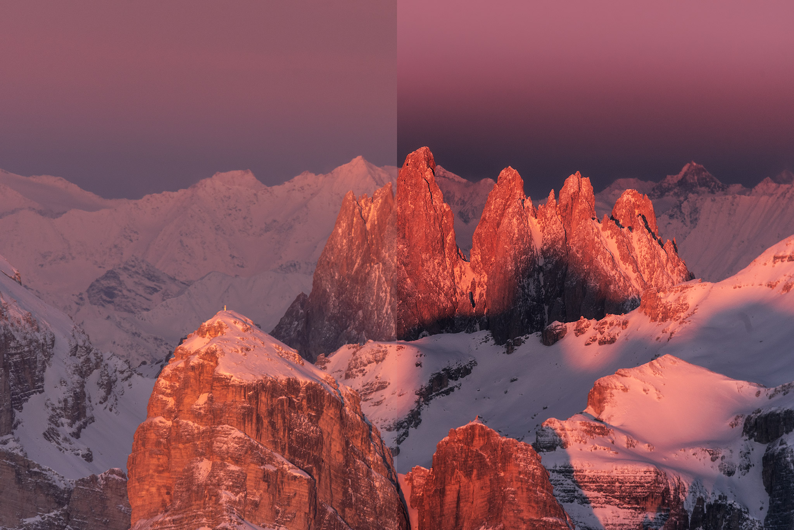
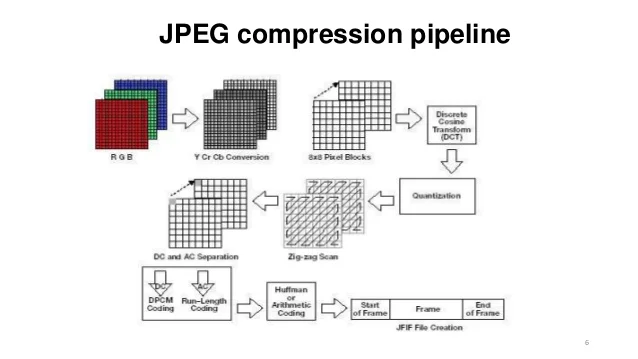
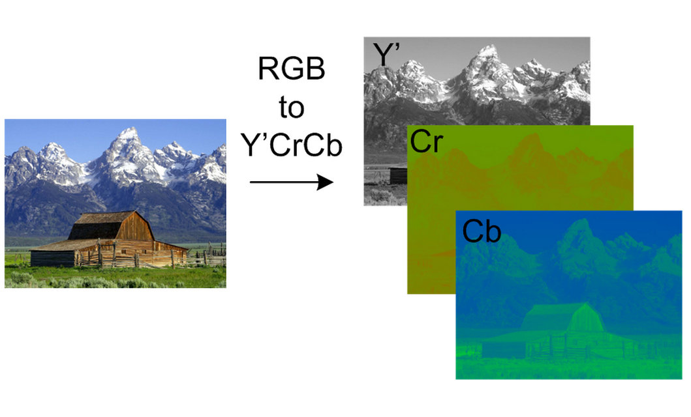
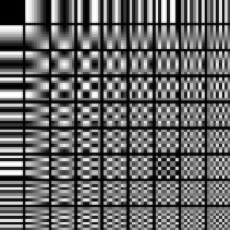
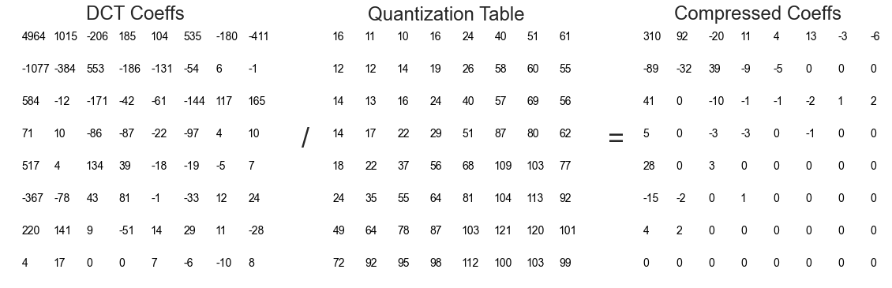
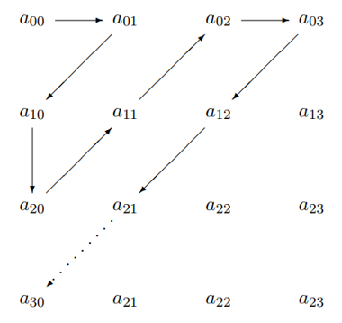

Joint Photographic Experts Group (JPEG)
Imagen

¿Qué es?
JPEG es un formato de codificación con pérdidas de imágenes dígitales. Es capaz de comprimir imágenes hasta casi un octavo de su tamaño de archivo original, pero deliberadamente pierde información. Esto significa que si una imagen es codificada con JPEG y luego se revierte el proceso de codificación, la imagen resultante será diferente que la imagen original.
Es uno de los formatos más utilizados en la web, debido a su tamaño de archivo reducido y su calidad aceptable.
Historia y Versiones
JPEG fue introducido en 1992, resultado de un proceso de investigación y desarrollo que había comenzado en 1986. La especificación cita trabajos de investigación y patentes relacionadas a los algoritmos y procesos que utiliza, tales como la DCT y la codificación Huffman.
-
1992
Fue publicada la primera versión del estándar JPEG, compuesta por cuatro partes separadas.
Utilizando un método de compresión basado en la Transformación Discreta del Coseno (DCT), JPEG 1 es capaz de codificar imágenes de grandes tamaños y comprimirlas a una fracción mínima de su tamaño de archivo original.
-
1997 - 2000
JPEG 2000, también conocido como JPEG 2, que tuvo el objetivo de sobrepasar el rendimiento de la primera versión. La diferencia clave entre ambos estándares es que JPEG 1 utiliza un algoritmo de compresión basado en la DCT, mientras que JPEG 2000 usa un método basado en transformaciones de ondículas.
Las principales ventajas de JPEG 2000 son la posibilidad de codificar una sola vez el contenido con una calidad específica (hasta sin pérdidas), para luego decodificarlo y acceder a él con calidad y resolución variables, o por regiones de interés.
Algoritmo
Características
-
Soporta un tamaño máximo de imagen de 65,535 píxeles por 65,535 píxeles
-
Su factor de compresión es típicamente de 50% a 75% del tamaño de archivo original. La compresión máxima llega a casi el 90% del tamaño original.
-
Su formato de archivo oficial, JIF, es poco utilizado. Otros formatos como JFIF y EXIF solucionan la mayoría de los puntos débiles de JIF.
-
Las terminaciones de nombre de archivo más comunes son .jpg, .jpeg, .jif, .jfif y .jpe.
Algoritmo de Codificación JPEG
El proceso de codificación de una imagen raw a una imagen JPEG sigue los siguientes pasos (es aplicado a cada canal de color YCBCR):

-
Tratamiento de Color
El proceso de tratamiento de color recibe la imagen original con modelo RGB y realiza dos procedimientos sobre ella: el cambio del modelo de color al modelo YCbCr y el "sub-muestreo cromático" o "down-sampling cromático".
-
Transformación Discreta del Coseno
Este paso subdivide la imagen en bloques de 8px de lado, y luego aplica la Transformación Discreta del Coseno (DCT) en los valores de color de cada bloque.
-
Cuantización
La matriz con los coeficientes DCT es dividida por una matriz de cuantización indicada según los parámetros de codificación. Este paso involucra una pérdida de información deliberada.
-
Codificador sin pérdidas
Finalmente, se aplican dos algoritmos de codificación: una variante de Run-length encoding (RLE) y el algoritmo de codificación de Huffman o codificación Aritmética (Huffman es más común).
Tratamiento de Color
El primer paso del proceso de tratamiento de color es la representación de la imagen original en el espacio de color YCBCR.
El espacio de color YCBCR incluye tres componentes: Y (luma o luminisencia), Cb (croma azul) y Cr (croma rojo). Los espacios de color YCBCR son definidos por una transformación matemática de coordenadas de los primarios RGB.

El propósito de la transformación del espacio de color de la imagen es propiciar el sub-muestreo cromático, o en su defecto, el down-sampling cromático.
Sub-muestreo Cromático
El ojo humano es mucho más sensible a la luminosidad (qué tan brillante es cada pixel de una imagen) que a los colores. JPEG aprovecha este factor para realizar la primera etapa de compresión de la información de la imagen a través de sub-muestreo cromático.
Este proceso es aplicado en los componentes croma (Cb y Cr) de la imagen en el espacio de color YCBCR. Su objetivo es reducir la cantidad de muestras de información en los componentes de color, dado que no afectan tan visiblemete la calidad de la imagen resultante.
El codificador recorre la imagen por bloques de cierto tamaño. Por cada bloque, el codificador obtiene el promedio del color de todos los píxeles del bloque (en el caso de down-sampling) o el color del píxel en la esquina superior izquierda del bloque (en el caso de sub-muestreo). En vez de almacenar los componentes cromáticos Cb y Cr "completos", el sub-muestreo cromático disminuye drásticamente la información portada por los componentes de color, manteniendo el componente luma intacto.
Existen diversos factores de sub-muestreo cromático, incluyendo: 4:1:1, 4:2:0, 4:2:2, 4:4:4 y 4:4:0.
Por ejemplo, si se tiene una imagen de 8px por 8px (64px total) y se aplica un sub-muestreo cromático 4:2:0, el tamaño del archivo resultante sería aproximadamente 50% del de la imagen original. Esto se debe a que en vez de utilizar 64 píxeles por canal, los canales Cb y Cr pueden representarse con solamente 16 píxeles.
Aunque el efecto del sub-muestreo cromático es perceptible en imágenes pequeñas, en imágenes más grandes (más de 200 píxeles) sus efectos son casi indistinguibles.
Transformación discreta del coseno
Si se considera el cambio en la luminosidad entre dos píxeles dados como la "frecuencia" de una señal, las imágenes digitales pueden ser tratadas como señales. JPEG se aprovecha de este hecho para codificar imágenes usando la Transformación Discreta del Coseno para lograr comprimir aún más.
La gran mayoría de las imágenes realistas tienen más componentes de bajas frecuencias que de altas frecuencias. En otras palabras, es más probable que un segmento de una imagen contenga varios píxeles adyacentes de luminosidad similar que secciones con cambios abruptos en la luminosidad. Asimismo, el ojo humano es mucho menos sensible a los detalles con cambios abruptos de luminosidad (o "frecuencia" de la imagen).
La DCT es una formula matemática que permite expresar una secuencia finita de puntos como el resultado de la suma de varias señales sinusoidales. La definición matemática de la DCT es la siguiente:

Donde f(j) es una función discreta, j = 0, 1, 2 ..., N -1 y c(k) es la inversa de la raíz cuadrada de 2 si k = 0 y c(k) es 1 para todos los demás enteros hasta N-1.
JPEG aplica la DCT a cada bloque 8x8 resultante del paso anterior y produce una matriz 8x8 por cada bloque, donde los componentes individuales de menor frecuencia son ordenados hacia la esquina superior izquierda de la matriz, mientras que los de mayor frecuencia quedan en la esquina opuesta.
Como las imágenes son bidimensionales y los bloques son matrices 8x8, JPEG aplica la DCT bidimensional. Esto involucra primero aplicar la DCT unidimensional a cada fila de la matriz, obtieniendo una matriz "intermedia" con coeficientes. Luego, JPEG aplica la DCT unidimensional a cada columna de la matriz intermedia, produciendo una matriz 8x8 con los coeficientes DCT del bloque de la imagen.
La siguiente imagen representa el resultado de la DCT bidimensional aplicada sobre un bloque 8x8.

La primera columna de bloques y la primera fila de bloques de la imagen anterior corresponden a los patrones producidos por la DCT unidimensional, mientras que los demás bloques son patrones compuestos por los resultados de la DCT unidimensional. En general, se puede construir cualquier imagen 8x8 utilizando los 64 patrones de la imagen anterior.
Cuantización
La cuantización sigue una idea muy simple: cada valor de frecuencia en la matriz 8x8 resultante de aplicar la DCT es dividido por un valor correspondiente en una matriz de cuantización 8x8, para luego ser redondeado a un entero.
Es importante recordar que en la matriz resultante de la DCT, los valores mayores se encuentran en la esquina superior derecha de la matriz. Las matrices de cuantización son lo opuesto: los valores más grandes se encuentran en la esquina inferior derecha.

Como resultado, los valores mayores resultantes de la DCT mantienen una proporción similar, mientras que los valores menores, que son la mayoría, son reducidos a 0 o a números cercanos a 0.
La cuantización permite a JPEG aprovechar una última fase de compresión por medio de algoritmos sin pérdidas para reducir valores redundantes.
Este paso pierde información al reducir datos a 0. Esto significa que si a una matriz cuantizada se le aplica la operación inversa con la misma matriz de cuantización, la matriz resultante será diferente a la original.
Las posibles matrices de cuantización para los codificadores están especificadas en el estándar JPEG.
Codificación sin pérdidas
JPEG utiliza una versión específica de Run-length Encoding y el algoritmo de codificación de Huffman para maximizar la compresión de los resultados de la cuantización.
RLE de JPEG
Primero, la matriz resultante de la cuantización se recorre en zig-zag, diagonalmente. Esto tiene la intención de agrupar la mayor cantidad de ceros en la menor cantidad de grupos.

La versión común de Run-length encoding comprime datos redundantes almacenando un conjunto con el dato y el número de datos redundantes que le siguen. Por ejemplo, si encuentra tres ceros contiguos, RLE los comprime como "0[x3]".
Sin embargo, JPEG almacena tríos de valores en su implementación de RLE. Un trío de valores, representado como [(r, s), c], contiene:
-
r: número de ceros que preceden al valor.
s: número de bits requeridos para codificar el valor del coeficiente.
c: el valor del coeficiente.
Un conjunto de datos comprimidos por LRE de JPEG suele visualizarse como el siguiente:
{[(0, 7), 78], [(0, 6), -38], [(1, 3), 4], [(3, 4), 17]}
En este caso, los valores 4 y 17 (los últimos 2 valores) son precedidos por grupos de ceros con longitudes de 1 y 3, respectivamente.
Huffman
Finalmente, JPEG comprime aún más los datos de imagen aplicando el algoritmo de codificación de Huffman a los datos comprimidos por RLE en el paso anterior.